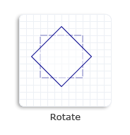

title: D2D1_MATRIX_3X2_F (D2d1.h) description: Represents a 3-by-2 matrix. ms.assetid: f05d7555-6482-4eea-950f-7b443892cc1f keywords:
Represents a 3-by-2 matrix.
typedef D2D_MATRIX_3X2_F D2D1_MATRIX_3X2_F;
D2D1_MATRIX_3X2 is a new name for the D2D_MATRIX_3X2_F structure. For a list of fields provided by the matrix, see D2D_MATRIX_3X2_F.
To simplify common matrix operations, Direct2D provides the D2D1::Matrix3x2F class, which is derived from the D2D1_MATRIX_3X2 structure. The Matrix3x2F class provides a set of helper methods for performing common tasks, such as creating a translation or skew matrix.
The following example uses the D2D1::Matrix3x2F::Rotation method to create a rotation matrix that rotates a square clockwise 45 degrees about the center of the square and passes the matrix to the SetTransform method of the render target (m_pRenderTarget).
The following illustration shows the effect of applying the preceding rotation transformation to the square. The original square is a dotted outline, and the rotated square is a solid outline.

// Create a rectangle.
D2D1_RECT_F rectangle = D2D1::Rect(438.0f, 301.5f, 498.0f, 361.5f);
// Draw the rectangle.
m_pRenderTarget->DrawRectangle(
rectangle,
m_pOriginalShapeBrush,
1.0f,
m_pStrokeStyleDash
);
// Apply the rotation transform to the render target.
m_pRenderTarget->SetTransform(
D2D1::Matrix3x2F::Rotation(
45.0f,
D2D1::Point2F(468.0f, 331.5f))
);
// Fill the rectangle.
m_pRenderTarget->FillRectangle(rectangle, m_pFillBrush);
// Draw the transformed rectangle.
m_pRenderTarget->DrawRectangle(rectangle, m_pTransformedShapeBrush);
Code has been omitted from this example. For more information about transforms, see the Transforms Overview.
| Requirement | Value |
|---|---|
| Minimum supported client | Windows 7, Windows Vista with SP2 and Platform Update for Windows Vista [desktop apps | UWP apps] |
| Minimum supported server | Windows Server 2008 R2, Windows Server 2008 with SP2 and Platform Update for Windows Server 2008 [desktop apps | UWP apps] |
| Minimum supported phone | Windows Phone 8.1 [Windows Phone Silverlight 8.1 and Windows Runtime apps] |
| Header | D2d1.h |